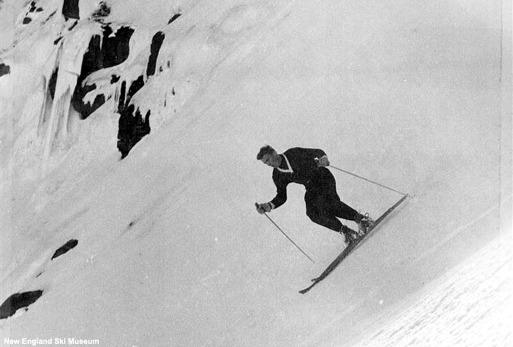

Pioneering History of Extreme Skiing
The history of skiing in Tuckerman Ravine is defined by a series of bold first descents that helped shape both the culture of the ravine and the development of extreme skiing in the United States.
1913
The first recorded ski descent from Mount Washington came when three Dartmouth students—Fred Harris, Joseph Cheney, and Carl Shumway—skied down the auto road from the summit.
1914
John S. Apperson of Schenectady, New York, is believed to have become the first person to ski in Tuckerman Ravine. An accomplished climber, skier, and environmentalist from the Adirondack Mountains, his visit helped establish the ravine as a premier destination for spring skiing.
1931
Dartmouth skiers John Carleton and Charley Proctor completed the first descent of the headwall. They climbed up the route, now known as the Lip, to the top of the headwall. Hop turning down on the breakable crust with early, rudimentary equipment, they skied down over the 45-degree wall of snow. Carleton fell high up on the run but recovered, while Proctor stayed upright for the entire run. They returned for a second run that same day.
1936
Mary Bird is believed to have made the first female descent of the headwall, marking an important moment for inclusivity in the sport.
1940s

Brooks Dodge—son of Joe Dodge, who played a key role in expanding the Appalachian Mountain Club hut system in the White Mountain National Forest—revolutionized skiing in Tuckerman Ravine by pioneering many of its most challenging and iconic runs, including Dodge's Drop, the Duchess, the Sluice, and the Icefall. Starting at just twelve years old, Dodge's desire to descend nearly every skiable line in the ravine laid the foundation for what would later be recognized as extreme skiing, cementing Tuckerman Ravine's reputation as a proving ground for skill, risk-taking, and innovation in New England ski culture.